02 - Regression example using tensorflow
Pablo Morala
2023-07-14
nn2poly-02-tensorflow-regression.RmdThis vignette’s goal
After showing how to use nn2poly in its default version
in vignette("nn2poly-01-introduction"), here we will
present how to use specific methods related to keras and
tensorflow that allow for an easier and smoother use of
nn2poly with that deep learning framework. Furthermore, we
will sow how to impose the needed weight constraints in
tensorflow during training to have accurate results and
compare those results with an unconstrained neural network.
In this vignette we will focus on a simple regression example and a
classification one is covered in
vignette("nn2poly-03-tensorflow-classification").
library(nn2poly)
library(keras)
# This sets all needed seeds
tensorflow::set_random_seed(1)Simple regression example
Simulated data generation
We will simulate polynomial data from the following polynomial: \(4x_1 - 3 x_2x_3\). Data needs to be scaled to the \([-1,1]\) interval.
# Define the desired polynomial for the simulated data
polynomial <- list()
polynomial$labels <- list(c(1), c(2,3))
polynomial$values <- c(4,-3)
# Define number of variables p and sample n
p <- 3
n_sample <- 500
# Predictor variables
X <- matrix(0,n_sample,p)
for (i in 1:p){
X[,i] <- rnorm(n = n_sample,0,1)
}
# Response variable + small error term
Y <- as.vector(eval_poly(X,polynomial)) + stats::rnorm(n_sample, 0, 0.1)
# Store all as a data frame
data <- as.data.frame(cbind(X, Y))
head(data)
#> V1 V2 V3 Y
#> 1 -0.6264538 0.07730312 1.13496509 -2.684020
#> 2 0.1836433 -0.29686864 1.11193185 1.632335
#> 3 -0.8356286 -1.18324224 -0.87077763 -6.344179
#> 4 1.5952808 0.01129269 0.21073159 6.279883
#> 5 0.3295078 0.99160104 0.06939565 1.165488
#> 6 -0.8204684 1.59396745 -1.66264885 4.650553
# Data scaling
maxs <- apply(data, 2, max)
mins <- apply(data, 2, min)
data <- as.data.frame(scale(data, center = mins + (maxs - mins) / 2, scale = (maxs - mins) / 2))
# Divide in train (0.75) and test (0.25)
index <- sample(1:nrow(data), round(0.75 * nrow(data)))
train <- data[index, ]
test <- data[-index, ]
train_x <- as.matrix(train[,-(p+1)])
train_y <- as.matrix(train[,(p+1)])
test_x <- as.matrix(test[,-(p+1)])
test_y <- as.matrix(test[,(p+1)])
plot(data)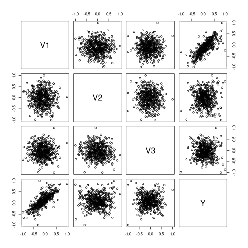
Original neural networks
We will build and train two different neural networks (NNs), one with
unconstrained weights (nn1) and another one imposing a
constraint on the weights (nn2).
Different constraints can be tested, but the suggested constraint based on our theoretical and empirical evaluation is to use the L1 norm equal to 1, constraining each vector of weights + bias arriving to a neuron to satisfy that their L1 norm is equal or less than 1.
Build NN 1, unconstrained
This NN will be built using standard tensorflow and keras practices, in this case with a sequential keras model without any constraint on the weights.
nn1 <- keras_model_sequential()
nn1 %>% layer_dense(units = 100,
activation = "tanh",
input_shape = p)
nn1 %>% layer_dense(units = 100,
activation = "tanh")
nn1 %>% layer_dense(units = 100,
activation = "tanh")
nn1 %>% layer_dense(units = 1,
activation = "linear")
nn1
#> Model: "sequential_10"
#> ________________________________________________________________________________________________________________________
#> Layer (type) Output Shape Param #
#> ========================================================================================================================
#> dense_15 (Dense) (None, 100) 400
#> dense_16 (Dense) (None, 100) 10100
#> dense_17 (Dense) (None, 100) 10100
#> dense_18 (Dense) (None, 1) 101
#> ========================================================================================================================
#> Total params: 20,701
#> Trainable params: 20,701
#> Non-trainable params: 0
#> ________________________________________________________________________________________________________________________Build NN 2, constrained
In order to implement the desired constraints, we provide the
add_constraints() function, that takes the structure of a
given NN (has to be a feed forward dense NN) and modifies its layers to
include the constraints. This is needed because default constraints
implemented in keras do not support to impose a constraint
at the same time on the weights and the bias and have to be combined
with a custom layer.
Our implementation is such that the bias on each neuron is included in the weights vector incident on that neuron, meaning that if the previous layer had \(h\) neurons, then the considered weight vector including the bias at a given neuron would have dimension \(h+1\), having the bias as it first element. Currently, L1 norm and L2 norm equal to 1 are implemented as options.
Note that L1 norm equal to 1 when scaling the input data to the \([-1,1]\) interval is the recommended option.
nn2 <- add_constraints(nn1, constraint_type = "l1_norm")
nn2
#> Model: "sequential_11"
#> ________________________________________________________________________________________________________________________
#> Layer (type) Output Shape Param #
#> ========================================================================================================================
#> layer__combined_l1_5 (Layer_Combined_L1) (None, 100) 400
#> layer__combined_l1_6 (Layer_Combined_L1) (None, 100) 10100
#> layer__combined_l1_7 (Layer_Combined_L1) (None, 100) 10100
#> dense_19 (Dense) (None, 1) 101
#> ========================================================================================================================
#> Total params: 20,701
#> Trainable params: 20,701
#> Non-trainable params: 0
#> ________________________________________________________________________________________________________________________Note how the parameters and structure are the same, but the layer type has been modified.
Compile and train both NNs
After building both NNs, we compile and train both of them. Note
that, as constraining the weights has trade-off in the learning speed of
the NN, the nn2 needs a higher number of epochs to properly
learn from the data.
Compile and train nn1 the model, and visualize its
training history:
compile(nn1,
loss = "mse",
optimizer = optimizer_adam(),
metrics = "mse")
history1 <- fit(nn1,
train_x,
train_y,
verbose = 0,
epochs = 300,
batch_size = 50,
validation_split = 0.2
)
plot(history1)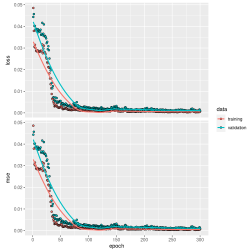
Compile and train nn2 the model, and visualize its
training history:
compile(nn2,
loss = "mse",
optimizer = optimizer_adam(),
metrics = "mse")
history2 <- fit(nn2,
train_x,
train_y,
verbose = 0,
epochs = 2000,
batch_size = 50,
validation_split = 0.2
)
plot(history2)Visualize both NN predictions
We can visualize the NN predictions vs the original Y values for both neural networks and observe how both of them provide accurate predictions (the values fall near the “perfect” diagonal red line).
# Obtain the predicted values with the NN to compare them
prediction_NN1 <- predict(nn1, test_x)
# Diagonal plot implemented in the package to quickly visualize and compare predictions
plot_diagonal(x_axis = prediction_NN1, y_axis = test_y, xlab = "NN 1 prediction", ylab = "Original Y")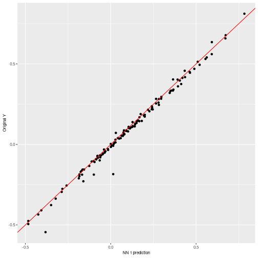
# Obtain the predicted values with the NN to compare them
prediction_NN2 <- predict(nn2, test_x)
# Diagonal plot implemented in the package to quickly visualize and compare predictions
plot_diagonal(x_axis = prediction_NN2, y_axis = test_y, xlab = "NN 2 prediction", ylab = "Original Y")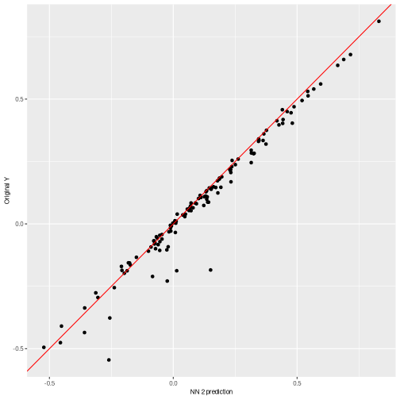
Using nn2poly to obtain the polynomial
After the NNs have been trained, we can directly call
nn2poly on the keras model. Therefore, we do
not need to build an object with weights and activation functions as in
the default case covered in
vignette("nn2poly-01-introduction"), and can benefit from
the generic methods implemented for keras models.
The only parameters that have to be added for nn2poly to work is the
Taylor order expansion at each layer (q_taylor_vector),
where we will choose 8 by default on non linear layers and 1 in the last
linear layer as Taylor is not used there. (The final polynomial order
will be limited by forced_max_Q=3)
We will do this for both neural networks and compare the results:
Visualizing the results
With the polynomial predictions, we can plot them using our diagonal
plot to compare them with their respective NN predictions. Please note
here that we compare the predictions of the polynomial with the NN
predictions and not the original data, as nn2poly’s goal is
to faithfully represent the NN behavior independently of how well the NN
predicts.
We can observe clearly how the polynomial obtained for the
constrained network (nn2) is predicting almost the same,
while the unconstrained network has significant errors.
plot_diagonal(x_axis = prediction_NN1, y_axis = prediction_poly1, xlab = "NN prediction", ylab = "Polynomial prediction") + ggplot2::ggtitle("Polynomial for NN1")
plot_diagonal(x_axis = prediction_NN2, y_axis = prediction_poly2, xlab = "NN prediction", ylab = "Polynomial prediction") + ggplot2::ggtitle("Polynomial for NN2")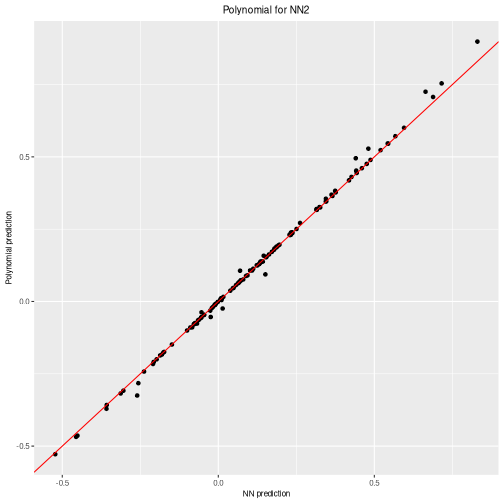
We can also plot the \(n\) most important coefficients in absolute value to compare which variables or interactions are more relevant in the polynomial. Note that, as data should be scaled to the \([-1,1]\) interval, interactions of order 2 or higher would usually need a higher absolute value than the lower order coefficients to be more relevant.
Recall that the original polynomial was \(4x_1 - 3x_2x_3\). If we observe the
polynomial from nn2, precisely interaction 2,3
has a high negative coefficient while variable 1 has a
positive one and the rest of variables and the intercept
(0) are quite close to zero. However, in the polynomial
from nn1, the obtained coefficients are not correct as
Taylor expansion is failing because of the high weights.
plot_n_important_coeffs(final_poly1, n_important_coeffs = 8)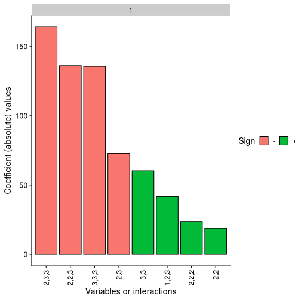
plot_n_important_coeffs(final_poly2, n_important_coeffs = 8)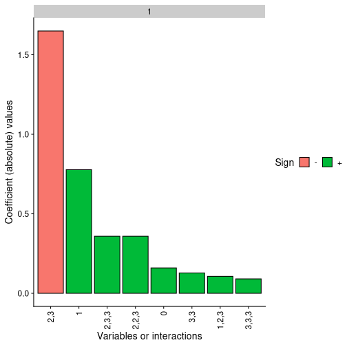
Finally, the problem with Taylor expansion can be checked with the following plot, where each layer is represented with their activation function, its Taylor expansion, the error and also the density of the activation potentials that the activation functions receives at that layer.
It can be clearly seen with the activation potentials density, in green, that it expands over a wide range in the unconstrained NN while the it is kept closer to zero in the constrained one, thus having a more accurate Taylor expansion around zero.
plot_taylor_and_activation_potentials(object = nn1,
data = train,
q_taylor_vector = q_taylor_vector,
forced_max_Q = 3,
constraints = FALSE)
#> [[1]]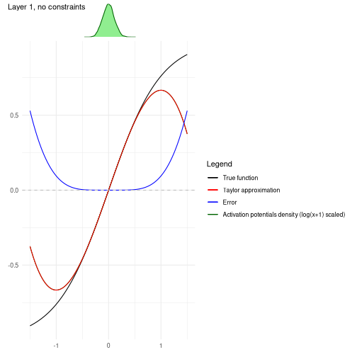
#>
#> [[2]]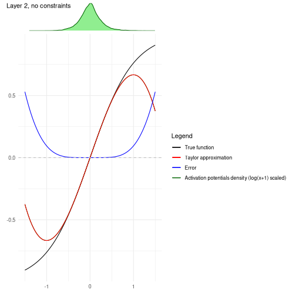
#>
#> [[3]]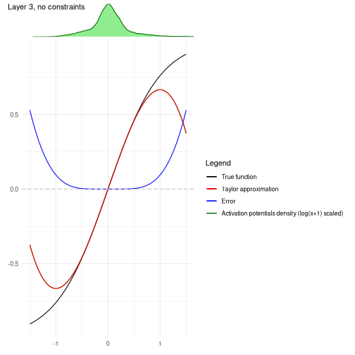
#>
#> [[4]]
plot_taylor_and_activation_potentials(object = nn2,
data = train,
q_taylor_vector = q_taylor_vector,
forced_max_Q = 3,
constraints = TRUE)
#> [[1]]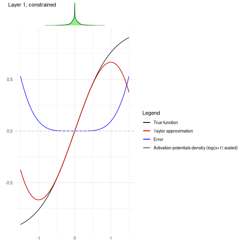
#>
#> [[2]]#>
#> [[3]]#>
#> [[4]]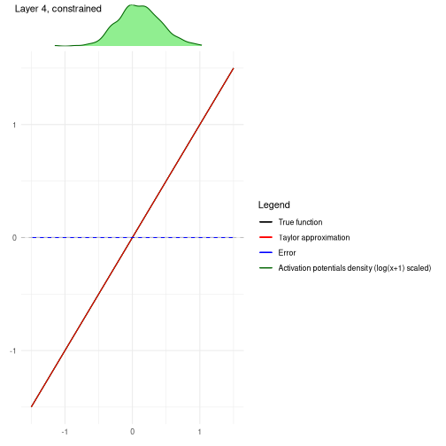